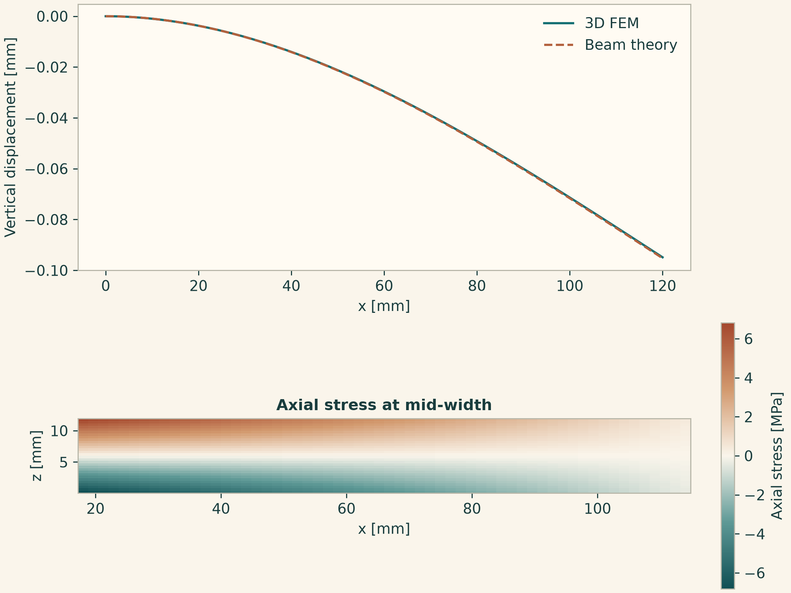

Docs › Examples › A 3D cantilever
A 3D cantilever
Geometry, material, physics, boundary conditions, mesh and solver: the whole model fits on one screen. No weak form to derive, no mesh file to import.
The model
from onesim.cad.d3 import Box
from onesim.materials import IsotropicSolid
from onesim.meshing import StructuredHexahedralMesher
from onesim.numerics import Numerics
from onesim.numerics.fem import FiniteElement, Lagrange
from onesim.numerics.linear import SparseDirect
from onesim.physics.solid_mechanics import (
FixedDisplacement, LinearElasticity, Traction, TractionFree)
from onesim.simulation import Problem, Simulation
beam = Box(length=0.12, width=0.018, height=0.012) # metres
aluminium = IsotropicSolid(
density=2700.0, specific_heat_capacity=900.0, thermal_conductivity=200.0,
youngs_modulus=70e9, poisson_ratio=0.30, thermal_expansion_coefficient=23e-6)
solid = LinearElasticity(domain=beam.volume, material=aluminium)
walls = beam.boundaries
problem = Problem(
name="Cantilever", geometry=beam, physics=(solid,),
boundary_conditions=(
FixedDisplacement(boundary=walls.x_min, physics=solid, value=(0.0, 0.0, 0.0)),
Traction(boundary=walls.x_max, physics=solid, value=(0.0, 0.0, -30.0 / (0.018 * 0.012))),
TractionFree(boundary=walls.all - walls.x_min - walls.x_max, physics=solid),
))
result = Simulation(
problem=problem,
mesh=StructuredHexahedralMesher(cells=(16, 3, 3)).generate(beam),
numerics=Numerics(spatial=FiniteElement(element=Lagrange(order=2)),
linear_solver=SparseDirect()),
).solve_stationary()
tip = result.field(solid.displacement).evaluate([[0.12, 0.009, 0.006]])
print(f"Tip deflection: {abs(tip[0, 2]) * 1e3:.4f} mm") # 0.0948 mmThe result
An aluminium beam of 120 × 18 × 12 mm, clamped at one end and loaded at the other. The computed tip deflection is 0.0948 mm; Euler–Bernoulli beam theory gives 0.0952 mm. Beam theory is an approximate reference for a slender beam, so the two are expected to agree closely, not exactly.
